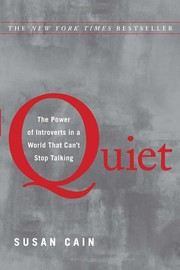

Quiet: The Power of Introverts in a World That Can't Stop Talking
Book·Susan Cain, 2012·内向性格的竞争力

A popular discussion of introversion and extraversion with some scientific basis. Its criticism of extravert-oriented society is advocacy.
- Author
- Susan Cain
- Year
- 2012
- Difficulty
- Beginner
- Kind
- Practice
- Schools
- Trait Theory
Editions
- Chinese edition 《安静》 苏珊•凯恩 / 苏珊·凯恩 · tr. 高洁 · 中信出版社 · 2012 Douban 8.1 (2343 ratings) Douban page ↗
- English edition Quiet: The Power of Introverts in a World That Can't Stop Talking Susan Cain · Crown, first edition · 2012 Open Library ↗